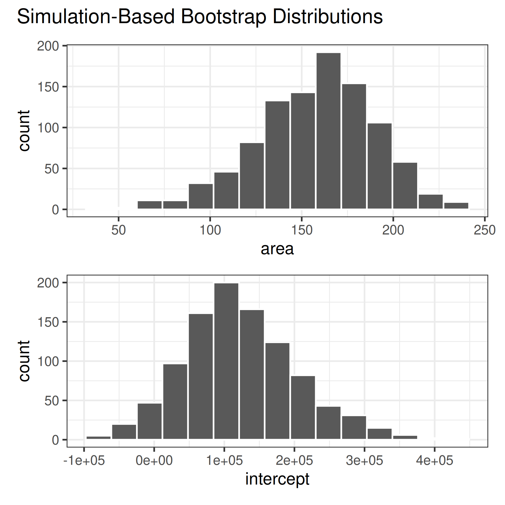
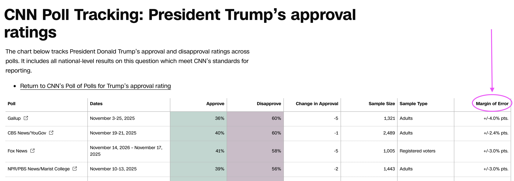
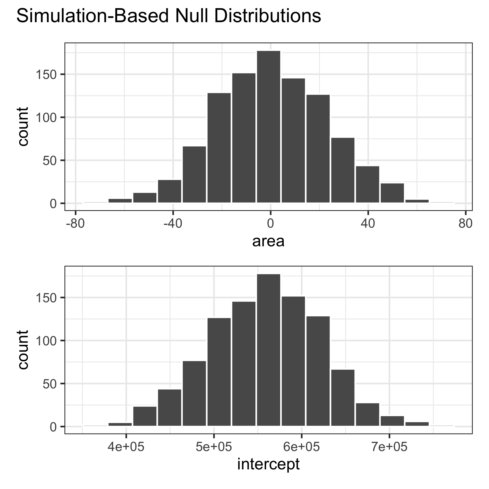

Making decisions
Lecture 25
Duke University
STA 199 - Fall 2025
December 2, 2025
Warm-up
It’s Giving Tuesday – Give feedback!
Take 2 minutes to fill out the TA evaluation form – link in your email! Due Monday, December 8th.
Nominate a TA for the StatSci TA of the Year award by sending an email to dus@stat.duke.edu with a brief narrative for your nomination.
- Please also fill out the course evaluation (on DukeHub) as well, I’d love to your feedback!
Announcements
- HW:
- HW 5 accepted until Wed, Dec 3 at 11:59 pm without penalty
- HW 6 due at 11:59 pm on Fri, Dec 6, accepted until Sun, Dec 7 at 11:59 pm without penalty
- Final exam:
- Classroom: Half of you will take it in this room (Bio Sci 111) the other half in (Physics 128), check your email for your classroom assignment
- Review: During reading period, date/time TBA
- Office hours: TBA soon as review session is scheduled
From last time
Participate 📱💻
Which of the following is true about confidence intervals?
- They’re for a sample statistic.
- They’re for a population parameter.
- They can be either for both a sample statistic or a population parameter.
- They’re neither for a sample statistic nor a population parameter.

Scan the QR code or go to app.wooclap.com/sta199. Log in with your Duke NetID.
Why do we construct confidence intervals?
To estimate plausible values of a parameter of interest, e.g.,
- a slope (\(\beta_1\))
- a mean (\(\mu\))
- a proportion (\(p\))
- etc.
What is bootstrapping?
Bootstrapping is a statistical procedure that resamples(with replacement) a single data set to create many simulated samples.
We then use these simulated samples to quantify the uncertainty around the sample statistic we’re interested in, e.g., a slope (\(b_1\)), a mean (\(\bar{x}\)), a proportion (\(\hat{p}\)).
Setup
Computing the CI for the slope I
Calculate the observed slope:
Computing the CI for the slope II
Take 1000 bootstrap samples and fit models to each one:
set.seed(1120)
boot_fits <- duke_forest |>
specify(price ~ area) |>
generate(reps = 1000, type = "bootstrap") |>
fit()
boot_fits# A tibble: 2,000 × 3
# Groups: replicate [1,000]
replicate term estimate
<int> <chr> <dbl>
1 1 intercept 47819.
2 1 area 191.
3 2 intercept 144645.
4 2 area 134.
5 3 intercept 114008.
6 3 area 161.
7 4 intercept 100639.
8 4 area 166.
9 5 intercept 215264.
10 5 area 125.
# ℹ 1,990 more rowsWhat does each observation on the plot represent?
- Resample, with replacement, from the original data
- Do this
reps = 1000times - Calculate the summary statistic of interest in each of these samples

Computing the CI for the slope III
Percentile method: Compute the 95% CI as the middle 95% of the bootstrap distribution:
Participate 📱💻
If you want to be very certain (i.e., more confident) that you capture the population parameter, should we use a wider or a narrower interval?
- Wider
- Narrower
- Depends on the situation
Scan the QR code or go to app.wooclap.com/sta199. Log in with your Duke NetID.
Precision vs. accuracy
What drawbacks are associated with using a wider interval?

Precision vs. accuracy
How can we get best of both worlds – high precision and high accuracy?
Recap
Population: Complete set of observations of whatever we are studying, e.g., people, tweets, photographs, etc. – population size = \(N\)
Sample: Subset of the population, ideally random and representative – sample size = \(n\)
Sample statistic \(\ne\) population parameter, but if the sample is good, it can be a good estimate
Statistical inference: Discipline that concerns itself with the development of procedures, methods, and theorems that allow us to extract meaning and information from data that has been generated by stochastic (random) process
We report the estimate with a confidence interval, and the width of this interval depends on the variability of sample statistics from different samples from the population
Since we can’t continue sampling from the population, we bootstrap from the one sample we have to estimate sampling variability
An alternative approach
Standard error method: Compute the 95% CI as the observed slope plus/minus ~2 * standard error (the standard deviation of the bootstrap distribution):
Margin of error
That quantity (~2 * standard error) is called the margin of error, e.g.,

On the horizon…
In this class you learned how to construct a confidence interval (i.e., calculate the margin of error) using a computational method called bootstrapping.
The bootstrap distributions you constructed (given enough
reps– repeated samples) were unimodal and symmetric around the observed statistic.This is not a happenstance! And there is theory behind it… It’s called the Central Limit Theorem!
You can learn about the Central Limit Theorem and theory-based methods for constructing confidence intervals (and other inference procedures) in future stats courses.
Syntax notes
-
Bootstrapping for categorical data
specify(response = x, success = "success level")calculate(stat = "prop")
-
Bootstrapping for other
statscalculate()documentation: infer.tidymodels.org/reference/calculate.htmlinfer pipelines: infer.tidymodels.org/articles/observed_stat_examples.html
Hypothesis testing
Hypothesis testing
A hypothesis test is a statistical technique used to evaluate competing claims using data
Null hypothesis, \(H_0\): An assumption about the population. “There is nothing going on.”
Alternative hypothesis, \(H_A\): A research question about the population. “There is something going on”.
Note
Hypotheses are always at the population level!
Setting hypotheses
Null hypothesis, \(H_0\): “There is nothing going on.” The slope of the model for predicting the prices of houses in Duke Forest from their areas is 0, \(\beta_1 = 0\).
Alternative hypothesis, \(H_A\): “There is something going on”. The slope of the model for predicting the prices of houses in Duke Forest from their areas is different than, \(\beta_1 \ne 0\).
Hypothesis testing “mindset”
Assume you live in a world where null hypothesis is true: \(\beta_1 = 0\).
Ask yourself how likely you are to observe the sample statistic, or something even more extreme, in this world:
\[P \big( b_1 \leq -159~or~b_1 \geq 159 ~|~ \beta_1 = 0 \big)\]
Hypothesis testing as a court trial
Null hypothesis, \(H_0\): Defendant is innocent
Alternative hypothesis, \(H_A\): Defendant is guilty
- Present the evidence: Collect data
-
Judge the evidence: “Could these data plausibly have happened by chance if the null hypothesis were true?”
- Yes: Fail to reject \(H_0\)
- No: Reject \(H_0\)
Hypothesis testing framework
Start with a null hypothesis, \(H_0\), that represents the status quo
Set an alternative hypothesis, \(H_A\), that represents the research question, i.e. what we’re testing for
-
Conduct a hypothesis test under the assumption that the null hypothesis is true and calculate a p-value (probability of observed or more extreme outcome given that the null hypothesis is true)
- if the test results suggest that the data do not provide convincing evidence for the alternative hypothesis, stick with the null hypothesis
- if they do, then reject the null hypothesis in favor of the alternative
Calculate observed slope
… which we have already done:
Simulate null distribution
View null distribution
# A tibble: 2,000 × 3
# Groups: replicate [1,000]
replicate term estimate
<int> <chr> <dbl>
1 1 intercept 594889.
2 1 area -12.6
3 2 intercept 477930.
4 2 area 29.5
5 3 intercept 581950.
6 3 area -7.93
7 4 intercept 487542.
8 4 area 26.0
9 5 intercept 643406.
10 5 area -30.0
# ℹ 1,990 more rowsVisualize null distribution
Visualize null distribution + p-value
Get p-value
Warning: Please be cautious in reporting a p-value of 0. This result is an
approximation based on the number of `reps` chosen in the
`generate()` step.
ℹ See `get_p_value()` (`?infer::get_p_value()`) for more information.
Please be cautious in reporting a p-value of 0. This result is an
approximation based on the number of `reps` chosen in the
`generate()` step.
ℹ See `get_p_value()` (`?infer::get_p_value()`) for more information.# A tibble: 2 × 2
term p_value
<chr> <dbl>
1 area 0
2 intercept 0Make a decision
Based on the p-value calculated, what is the conclusion of the hypothesis test?